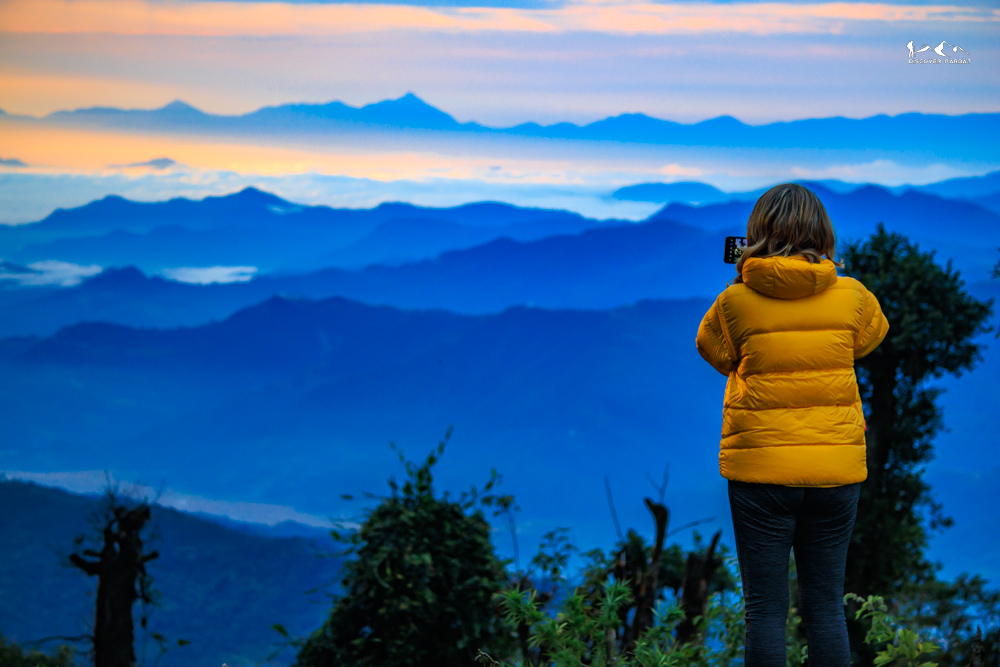
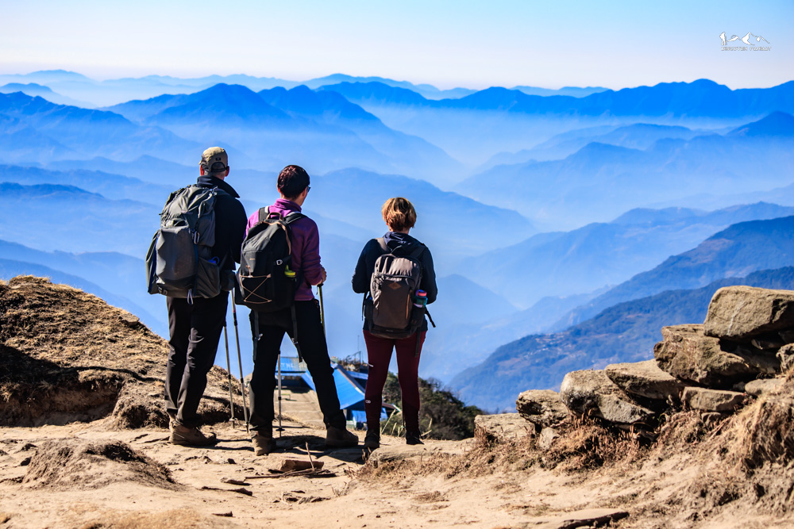
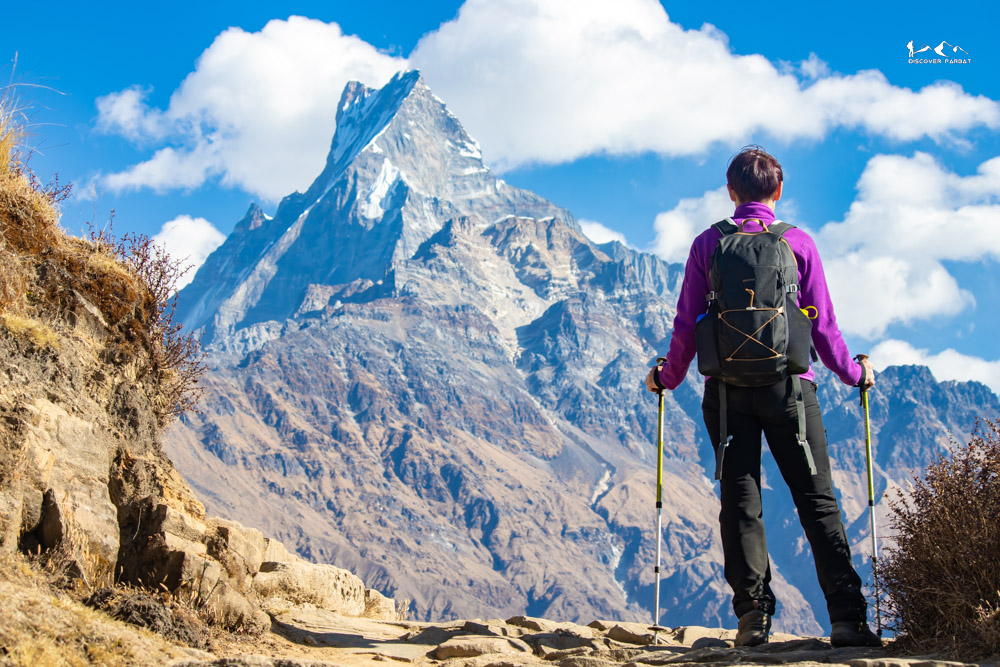
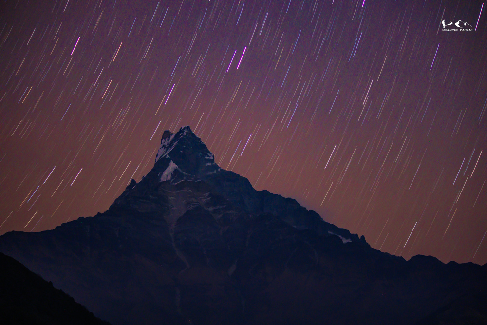
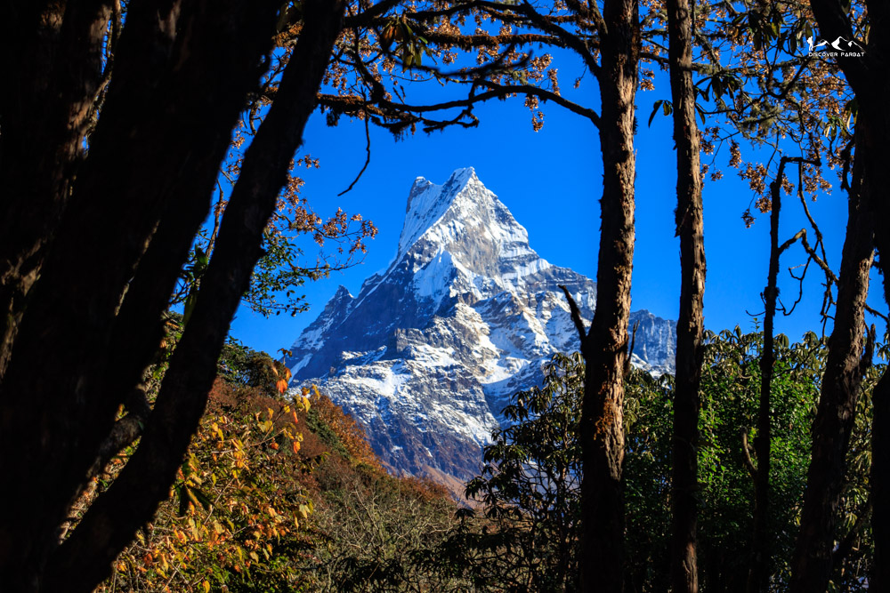

Trek through the ridge leading to Fishtail Mountain








Photo GalleryThe Mardi Himal Trek is one of the most scenic short treks in the Annapurna region of Nepal, offering a perfect combination of forest trails, alpine landscapes, and breathtaking close-up views of the Himalayas. This 5-day trek is ideal for those seeking a compact yet rewarding trekking experience with diverse terrain and dramatic mountain scenery.
Starting from the hills above Pokhara, the trail gradually ascends through dense rhododendron and oak forests, creating a peaceful and immersive natural experience. As you move higher, the forest begins to thin out, revealing stunning views of Machhapuchhre (Fishtail), Annapurna South, and Hiunchuli. The transition from lush greenery to open ridgelines is one of the defining features of this trek.
As the trail continues along the Mardi Himal ridge, trekkers are rewarded with panoramic Himalayan vistas that feel incredibly close and expansive. Walking along these ridges offers a unique perspective, with deep valleys below and towering snow-capped peaks rising directly ahead. The proximity to Machhapuchhre is particularly striking, making this trek one of the best viewpoints for experiencing its iconic beauty.
The upper viewpoints of the trek provide unforgettable sunrise experiences, where the first light of the day illuminates the Annapurna range in golden hues. The peaceful atmosphere, combined with uninterrupted mountain views, creates a truly memorable Himalayan moment.
Beyond the landscapes, the trek also offers a glimpse into rural life in the Annapurna region, as the trail eventually descends towards traditional villages. This adds a cultural dimension to the journey, blending natural beauty with authentic local experiences.
The Mardi Himal Trek is considered a moderate trek and is suitable for both beginners and experienced trekkers. Its relatively short duration, combined with its rich variety of scenery and close-up mountain views, makes it one of the best options for those looking to experience the Himalayas within a limited timeframe.
If you are looking for a trek that delivers diverse landscapes, dramatic ridgeline walks, and stunning views of Machhapuchhre and the Annapurna massif, the Mardi Himal Trek stands out as one of the most rewarding short treks in Nepal.
You want dramatic, up-close views of Fishtail and the Annapurna range
You have 5 days and want a complete Himalayan experience with diverse terrain
You enjoy ridgeline walking with open panoramic views and big sky moments
You're comfortable with a moderate challenge — some steep sections and altitude above 4,000m
You're looking for deep cultural immersion and village homestay experiences
You prefer flat or easy trails with minimal altitude gain each day
Morning drive from Pokhara to Kande, about an hour. We start hiking from Kande to Australian Camp and then to Pothana, where we stop for lunch. The first hour is a bit steep uphill and then mostly flat or gradual. After lunch, we cross Pitam Deurali, from where it's another half an hour of steep uphill to reach Suire Danda.
We wake up to a beautiful view of Dhaulagiri and Annapurna South. After breakfast, we start hiking through the forest ridge — a mix of flat and gradual uphill until Forest Camp, where we stop for a tea break. From there we gain more elevation and reach Rest Camp at 2,600m for lunch. After lunch, we gain another 400m in elevation to reach Low Camp. We can see beautiful sunset colors on Fishtail from here.
We start our day with an amazing view of golden Fishtail Mountain. We hike to Badal Danda, from where we begin seeing Annapurna South and Hiunchuli. From there we hike along the open, exposed ridge with no trees until we reach High Camp. After lunch we go for an acclimatization hike, gaining around 200m towards the Lower Viewpoint.
We wake up at around 4:30 AM and start our hike to the Lower Viewpoint — about 1.5 to 2 hours of uphill, reaching 4,000m. Optionally, you can continue to the Upper Viewpoint or Mardi Himal Base Camp. At the Lower Viewpoint there are tea shops for hot drinks. We enjoy stunning close views of Annapurna South and Fishtail before retracing back to High Camp.
After a late breakfast at High Camp, we descend to Low Camp via Badal Danda along the ridgeline trail. We have lunch at Low Camp and take some rest.
On the last day, we hike from Low Camp down to Siding village, following stone steps all the way down through the forest. It takes around 2–3 hours. From Siding, we take a jeep back to Pokhara — a couple of hours' drive.
Mardi Himal is rated Moderate — it's achievable for first-timers with a reasonable level of fitness, but it's a step up from an easy trek. Day 4 starts at 4:30 AM and involves reaching 4,000m, which requires acclimatisation and stamina. If you can handle 5–7 hours of walking on consecutive days, including some steep sections, you'll be fine. We include an acclimatisation hike on Day 3 to help your body adjust.
We arrange private transport from Pokhara to Kande, which takes around an hour. On the final day, we return from Siding village by jeep — again arranged by us. Both transfers are included in the trek cost, so there's nothing to organise on your end.
Teahouses on the Mardi Himal route are simple and functional — basic private rooms, shared bathrooms, and communal dining areas. Higher up (High Camp), facilities are more basic as you'd expect at altitude. Hot showers may be available at lower camps for a small fee. Bring a sleeping bag liner for extra warmth at the higher stops, especially High Camp at 3,550m.
The highest point on this trek is around 4,000–4,300m at the viewpoint, which is high enough to feel the effects of altitude — headaches, fatigue, and shortness of breath are common. We build in an acclimatisation hike on Day 3 before the summit push on Day 4 to help your body adjust. Our guides are trained to monitor for altitude sickness. If you feel unwell, descending is always the safest option and we'll support that decision fully. Staying hydrated and not rushing the ascent are the most important factors.
Teahouse menus on this route are solid — dal bhat, noodles, pasta, eggs, soups, porridge, and seasonal vegetables. Higher up the menu simplifies, but there's always enough to fuel you for the day. Three meals per day are included in your cost. If you have dietary restrictions, let us know in advance and we'll flag it with the teahouses along the route.
October and November are the most popular months — post-monsoon air gives the clearest mountain views and the trails are dry and firm. March to May is also excellent, with rhododendrons in bloom through the forest sections. December is surprisingly good with far fewer trekkers and crisp visibility, though nights at High Camp will be cold. June to September brings monsoon rain which makes the high ridges slippery and views less predictable.
Yes — an Annapurna Conservation Area Permit (ACAP) and a TIMS card are both required. These are included in your trek cost and arranged by us in Pokhara before departure. You don't need to visit any permit offices yourself.
Yes, this is optional on Day 4. The standard plan reaches the Lower Viewpoint at around 4,000m, which already gives extraordinary views of Fishtail and Annapurna South. If you're feeling strong and acclimatised, your guide can take you higher to the Upper Viewpoint or towards Mardi Himal Base Camp. This adds time and effort, so we assess it on the day based on conditions and how everyone is feeling.
Key items: sturdy trekking boots with ankle support, warm layers including a down jacket (High Camp nights are cold), waterproof outer shell, trekking poles (very helpful on the descent), a headlamp for the 4:30 AM summit start, sunscreen, sunglasses, a reusable water bottle, and a daypack. A sleeping bag rated to at least -5°C is recommended for High Camp. We'll send a full packing list after booking.
If you need to descend early for any reason — whether that's altitude sickness, injury, or personal circumstances — there is no refund on the remaining trek cost. However, we will arrange comfortable accommodation for you in Pokhara for the number of nights that remain on your itinerary at no extra charge. Please see our full Cancellation Policy for details.